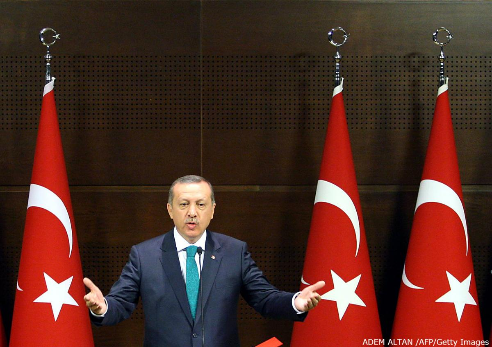

کنترل اردوغان بر مطبوعات ترکیه
روپرت مرداک در مارس ۲۰۱۲ به آنکارا پرواز کرد و یک ساعت با رجب طیب اردوغان، نخست وزیر ترکیه، درباره سرمایهگذاری در این کشور گفتگو کرد. البته این اولین تلاش او برای ورود به این کشور نبود. در سال ۲۰۰۶، شرکت نیوز کورپوریشن آقای مرداک که در آن زمان صاحب شرکتهایی در حوزه فیلم، تلویزیون و روزنامه در آمریکای شمالی، اروپا و استرالیا بود، بخشی از سهام یک شبکه تلویزیونی ترکیه را خریداری کرد. نیوز کورپوریشن در سال ۲۰۰۸ نسبت به سرمایهگذاری در دو شرکت رسانهای دیگر ابراز علاقه کرد: یک روزنامه که در سطح کل کشور توزیع میشد، و شبکه تلویزیونی شریک آن. تا زمان انجام ملاقات روپرت مرداک با آقای اردوغان، این دو شرکت طبق گزارش عملکرد مالی خودشان حدود ۲۰۰ میلیون دلار ضرر کرده بودند. شرکت چالیک هولدینگ، مالک این دو شرکت، گروه مالی گلدمن سَکس را مأمور پیدا کردن خریدار برای این شرکتها کرده بود. این بانک هم به وظیفهاش عمل کرد. نیوز کورپوریشن در کنار شرکت تایم وارنر و چند شرکت سرمایهگذاری خصوصی مثل TPG Capital، KKR & Co. و گروه ابراج دوبی، یکی از خریداران احتمالی بود.

البته تلاش آنها بیهوده بود. در ماه اکتبر همان سال شرکت چالیک از بانک گلدمن سَکس خواست که برنامه فروش داراییها را رها کند. این در حالی بود که به گفته یک فرد آگاه، مذاکرات با شرکت تایم وارنر در جریان بود. دو ماه بعد شرکت چالیک این داراییهای رسانهای را به یک شرکت ترکیهای فروخت. طبق یک گزارش ۲۵۲ صفحهای پلیس از شنود مکالمات تلفن همراه، زیر نظر گرفتن افراد و تصاویر ویدئویی، واسطه این معامله کسی نبود جز آقای اردوغان. این شنودها در چارچوب تحقیقات ۱۵ ماهه درباره فساد دولتی انجام گرفت. روزنامه صباح و شبکه تلویزیونی ATV از سال ۲۰۰۸، یعنی زمانی که شرکت چالیک آنها را خرید، از متحدان حزب عدالت و توسعه به رهبری آقای اردوغان بودند. فادی هاکورا، یکی از محققان همکار موسسه چتم هاوس لندن که کارشناس مسائل ترکیه است، میگوید: "صباح روزنامهای سنتی و قابل احترام است و روی کاغذهای بزرگ چاپ میشود، و به نظر میرسد نخست وزیر مایل است کنترل آن در اختیار دوستانش باشد. حدود ۸۰ درصد رأیدهندگان به حزب آقای اردوغان اخبار را عمدتا از مطبوعات کاغذی دریافت میکنند، و نه اینترنت. در نتیجه، داشتن کنترل روی محتوای این روزنامه اهمیت زیادی دارد."
انتخابات آتی
آقای اردوغان سرگرم جنگیدن با رگباری از افشاگریها درباره فساد در دولتش است. او در هفتههای آتی سعی خواهد کرد در حوزه روابط عمومی بسیار فعال باشد، چرا که تاریخ برگزاری انتخابات محلی روز ۳۰ مارس است، و انتخابات ریاست جمهوری هم ماه اوت آینده برگزار خواهد شد، و او احتمالا در این انتخابات نامزد خواهد شد. شبکههای تلویزیونی متحد او از پخش سخنان کسانی که در پارلمان علیه او صحبت میکنند، امتناع میکنند و روزنامههای حامی او هرگونه ادعا درباره نادرست بودن اقداماتش را رد میکنند. خود آقای اردوغان هم پیگیریهای مراجع قضایی را تلاشی برای کودتا علیه دولتش میخواند. مبارزه برای کنترل رسانهها سال پیش پس از آن بالا گرفت که روزنامه صباح و شبکه تلویزیونی ATV به فروش گذاشته شدند. در حالی که شرکت تایم وارنر و دیگران برای رسیدن به توافقی در زمینه فروش این رسانهها مشغول گفتگو با گلدمن سَکس بودند، آقای اردوغان از دامادش که رئیس شرکت مالک این رسانهها بود، خواست که به خانهاش در استانبول برود. در این ملاقات دو برادر که مدیریت گروه کالیون (یک شرکت ساختمانی) را برعهده داشتند هم حاضر بودند. این را کارآگاهان پلیس در گزارششان از شنودها گفتند. آقای اردوغان نتیجهگیریهای این گزارش را ساختگی میداند.
جمعآوری منابع مالی
یکی از این دو برادر نهایتا این رسانهها را خریداری کرد. بعد از این جلسه، وزیر حمل و نقل آقای اردوغان از گروهی از آشنایانش در حوزه ساخت و ساز خواست که به جمعآوری منابع مالی بپردازند. نهایتا دستکم ۴۵۰ میلیون دلار فراهم شد. هدف از این کار تأمین مالی خرید روزنامه و شبکه تلویزیونی بود. در گزارش پلیس آمده که بخشی از این پول بعدا در یک وانت مرسدس بنز سیاهرنگ گذاشته، و به بانکی که توسط مالک روزنامه اداره میشد، تحویل داده شد. طبق این گزارش، مالکان شرکتهای ساختمانی مزبور در ازای این خدمات انتظار داشتند که پیشاپیش از قراردادهای دولتی خبردار شوند تا بتوانند آنها را میان خود تقسیم کنند. در گفتگوهای ضبط شده این تاجران، آنها درباره پروژهای ۲ میلیارد دلاری برای گسترش فرودگاه دوم شهر استانبول، یک شبکه راه آهن سریعالسیر میان استانبول و آنکارا و یک تونل ۵۴ کیلومتری که قرار است از میان تپههای غرب ترکیه بگذرد، با هم بحث میکردند. همه این طرحها بخشی از پروژههای دولت اردوغان است که حجمشان دستکم به ۷۰ میلیارد دلار میرسد.
خود آقای اردوغان در یک پرونده قضایی به این گزارشها اشاره کرد. وزیر دادگستری او، بکیر بوزداغ، و مخالفان سیاسی او هم در صحن پارلمان گوشههایی از این گزارشها را خواندند. بخشهایی از این گزارشها هم در رسانههای ترکیه منتشر شده است. این گزارشها با نواری که هفته پیش در وبسایت یوتیوب منتشر شد، فرق دارد. در مورد آن نوار ادعا میشود که مشروح مکالمه اردوغان و پسرش است که در آن درباره نحوه پنهان کردن دستکم ۶۰ میلیون دلار پول نقد صحبت میشود. نخست وزیر ۶۰ ساله ترکیه میگوید که این نوار یک مونتاژ "غیراخلاقی" است. انتشار این نوار باعث شده که در نقاط مختلف کشور اعتراضاتی برپا شود. گزارش پلیس تنها حلقهای از یک زنجیره تحقیقات همزمان است که روز ۱۷ دسامبر منتشر شد. همزمان با انتشار این گزارش شمار زیادی از افراد مرتبط با دولت اردوغان در سراسر کشور به اتهام ارتکاب جرائمی شامل قاچاق طلا، ارتشا و تقلب در مناقصههای دولتی بازداشت شدند.
چالشها در زمینه سرمایهگذاری
دولت اردوغان موفق شده میزان بیسابقهای از سرمایهگذاری خارجی را به بزرگترین اقتصاد عمده اروپا جذب کند. با این وجود، اینکه تایم وارنر و نیوز کورپوریشن در تلاش برای توسعه جای پایشان در ترکیه ناکام ماندند، نشاندهنده چالشهای موجود در ترکیه است.ناتانیل براون، سخنگوی شرکت فاکس قرن ۲۱ (21st Century Fox Inc.) حاضر به اظهار نظر در این مورد نشد. نیوز کورپوریشن سال پیش به دو شرکت کوچکتر تقسیم شد، و شاخه مربوط به تفریح و سرگرمی زیر چتر فاکس قرن ۲۱ قرار گرفت. کیت کوکوزا، سخنگوی تایم وارنر، حاضر به اظهار نظر در این زمینه نشد. در گزارش پلیس ترکیه آمده که آقای اردوغان بعد از ۱۱ سال تکیه زدن بر مسند نخست وزیری، بهدنبال در کنترل گرفتن رسانههای خبری کشور است. او در همین حال به اتحادیه اروپا فشار میآورد که مذاکرات بر سر عضویت ترکیه در این اتحادیه از سر گرفته شود. رسوایی اخیر باعث شد ارزش پول ملی ترکیه روز ۲۴ ژانویه به پایینترین حد خود برسد. این اتفاقات به مخالفان دولت که در یک دهه گذشته در موضع دفاعی قرار داشتند، جان دوبارهای بخشیده است. اردوغان روز ۱۱ فوریه در واکنش به این گزارش گفت: "همه اینها را از خودتان درآوردهاید." او قضیه جمعآوری کمکهای مالی را هم به ریشخند گرفت. او در سخنرانیهای مختلف در سراسر کشور گفته که تحقیقات درباره فساد فراگیر را "قدرتهای خارجی" و فتحالله گولن، راه انداختهاند. آقای گولن که قبلا از متحدان اردوغان بود و در آمریکا ساکن است، حالا به مخالف او تبدیل شده است.
مذاکرات رونویسی شده
لطفالله گوکتاش، سخنگوی اردوغان، به تماسهایی که با تلفن همراه او گرفته شد، جواب نداد. تلفن دفتر سخنگوی مطبوعاتی را کسی پاسخ نمیداد و به ایمیلی هم که به دفتر نخست وزیر فرستاده شد، جوابی داده نشد. گفتگوهای میان غولهای صنعت ساخت و ساز که با ذکر تاریخ، ساعت و شماره تلفن همراه طرفها یادداشت شده، نشان میدهد که آنها برای یافتن منابع مالی لازم به هر دری میزدند. آنها به "جناب" اردوغان زنگ میزنند و به حق واسطهگری ۱۰ درصدی که باید به بینالی ییلدریم، وزیر حمل و نقل، پرداخت شود اشاره میکنند. او مسئول قراردادهای مربوط به ایجاد زیرساختها بود. آقای ییلدریم به دو ایمیلی که برایش فرستاده شد جواب نداد و دفتر پارلمانی او هم حاضر به پاسخگویی نشد. او در ماه دسامبر از سمتش کنار گذاشته شد و حالا نامزد شهرداری ازمیر شده است. بیشتر گفتگوهایی که محتوای آنها پس از شنود روی کاغذ آورده شده، به بحثهای تاجران درباره تأمین منابع مالی و تکرار دستورهایی مربوط میشود که میگویند شخصا از ییلدریم و اردوغان دریافت کردهاند. پلیس میگوید که ییلدریم و داماد اردوغان (مدیرعامل وقت شرکت چالیک) از تلفنهای همراه استفاده نمیکردند. شنود تلفنهای همراه از شنود تلفنهای ثابت آسانتر است.
جابجایی دادستانها
تحقیقات درباره فساد مالی با مدیریت معمر اکاس انجام میشد. او قبلا از دادستانهای استانبول بود، اما حالا مسئولیت این پرونده از او گرفته شده است. او روز ۲۶ دسامبر در بیانیهای گفت که دولت در تحقیقات دخالت میکند. امکان تماس با او برای شنیدن نظراتش فراهم نشد. بعد از اولین بازداشتها در ساعات اولیه روز ۱۷ دسامبر، دولت اردوغان بهسرعت به آنها واکنش نشان داد. پروندهها از دادستانهای مربوطه گرفته شد و خود آنها با تنزل درجه مواجه شدند. بیش از ۵۰۰۰ افسر پلیس هم جابجا شدند. ماه گذشته دولت قانونی را به تصویب رساند که امکان تعطیلی وبسایتها بدون حکم دادگاه را فراهم میکرد و در آن آمده بود که تحقیقات دادستان باید به تأیید دولت برسد. مخالفان دولت مرتبا در صحن پارلمان نوارها را پخش میکنند و گوشههایی از گزارش پلیس از گفتگوهای متهمان را میخوانند. بعد از آنکه کمال قلیچداراوغلو، رهبر یک حزب مخالف دولت، روز ۱۱ فوریه نواری را در پارلمان پخش کرد، وکلای اردوغان از او به دادگاه شکایت کردند. به گفته خبرگزاری دولتی آناتولیا در روز ۱۵ فوریه، او از جمله به "نقض محرمانه بودن تحقیقات" متهم شده است.
پرونده قضایی
وکلای آقای اردوغان در شکایتشان گفتند: "بعضی دادستانها و کارمندان دولت تلفنهای شمار زیادی از کسانی را که نخست وزیر مرتبا با آنها صحبت میکند، شنود کردهاند. آنها با انجام این کار از حدود اختیارات خود فراتر رفتهاند." آقای بوزداغ، وزیر دادگستری هم در پاسخی که در پارلمان به آقای قلیچداراوغلو داد، گفت که "فرآیند دادرسی" در حال تبدیل به یک "کارزار مجازات بدون محاکمه" است. آقای بوزداغ گفت: "افشای اسناد مربوط به تحقیقات قضایی و دارای ماهیت محرمانه در پارلمان جرم است. حتی اگر این گفتگوها به طور قانونی شنود شده بودند، پخش آنها زیر سقف پارلمان مناسب و برازنده پارلمان ما، و حوزه سیاست و قانونگذاریمان نبود." علاوه بر جزئیات مالی، در این گفتگوها از روابط برخی از ثروتمندترین افراد ترکیه پرده برداشته میشود.
فشار خون
آنها در این گفتگوها به شوخی ماجرای تاجری را تعریف میکنند که از شنیدن مبلغی که باید کمک کند از حال رفت، و با سه قرص فشار خون حالش سرجایش آمد. آنها با هم بحث میکنند، به موضوع تعهدات مالیاتی میپردازند، و با ادبیاتی توهینآمیز از پیامدهای اقداماتشان یاد میکنند. مثلا در مکالمهای که در روز ۲۱ سپتامبر انجام شد و شرح آن در گزارش پلیس موجود است، صحبتهای مهمت چنگیز، مالک گروه چنگیز اینسات، و نیهات اوزدمیر، رئیس هولدینگ لیماک، آمده است. آنها هر دو بخشی از کنسرسیومی هستند که برنده مناقصه ساخت فرودگاهی در خارج استانبول شده است. ساخت این فرودگاه ۱۴ میلیارد دلار هزینه خواهد داشت. آنها در این مکالمه به استرسی اشاره میکنند که برای تأمین پول در موعد مقرر تحمل میکنند. در متنی که از این مکالمه تهیه شده، از قول آقای اوزدمیر آمده: "مثل جنازه شدهام. دیگه به اینجام رسیده! این کار شکنجه اس!"آقای چنگیز با او ابراز همدردی میکند و بعد آنها درباره اینکه در صورت فاش شدن قضیه چه اتفاقی خواهد افتاد، صحبت میکنند.
لرزاندن ترکیه
آقای اوزدمیر گفت: "اینها نمیدانند. ترکیه تکان شدیدی خواهد خورد." آقای چنگیز به تماسها و پیامکهای مکرر به تلفن همراهش و ایمیلهایی که برایش فرستاده شد، پاسخ نداد. آقای اوزدمیر به دو ایمیلی که برایش فرستاده شده بود، جواب نداد. این ایمیلها به آدرسی فرستاده شده بود که دستیارش به ما (بلومبرگ) داده بود. در سال ۲۰۱۲، موقعی که روپرت مرداک به خرید روزنامه صباح (با تیراژ روزانه ۳۱۹ هزار نسخه) و تلویزیون ATV ابراز علاقه کرد، این رسانهها تحت مالکیت بخشی از شرکت چالیک بنام گروه رسانهای تورکوواز (Turkuvaz) بودند. شرکت چالیک در آوریل ۲۰۰۸ برای خرید این روزنامه و شبکه تلویزیونی یک میلیارد و ۲۵۰ میلیون دلار پرداخته بود. برای انجام این نقل و انتقال، دو بانک دولتی ۷۵۰ میلیون دلار به این شرکت قرض دادند. مابقی قیمت را هم خریدار و یک شریک قطری پرداختند. شرکت چالیک بعد از انجام بیع گفت: "احساس مسئولیت و رفتار اخلاقی مبنای سیاست خبررسانی ما خواهد بود. صباح و ATV به ارائه خبرهای بیطرفانه و مستقل به عموم ادامه خواهند داد."
تیترهای مشابه
اما به گفته موسسه فریدام هاوس (Freedom House) دقیقا عکس این اتفاق افتاد. این موسسه مستقر در واشنگتن که از جمله به نظارت بر آزادی رسانهای میپردازد، در گزارش ماه فوریه خود گفت که روزنامهای که زمانی خط فکری خود را داشت، عملا به سخنگوی دولت تبدیل شده است. در این گزارش به مواردی اشاره شده که روزنامه صباح و دیگر روزنامههای نزدیک به دولت از تیترهایی دقیقا مشابه هم استفاده کردهاند. این روزنامه اولین رسانهای نبود که در اختیار طرفداران آقای اردوغان قرار گرفت. در سال ۲۰۱۱، روزنامه ملیت فروخته شد تا پول لازم برای پرداخت جریمه ۳ میلیارد و ۸۰۰ میلیون دلاری – که دولت بهعنوان جریمه مالیاتی برای مالک آن در نظر گرفته بود – فراهم شود. خریدار شرکتی بنام گروه دمیرورن است که در حوزه توزیع گاز فعال است و یک مرکز تجاری کوچک هم دارد. این شرکت در ماه مه ۲۰۱۲ عاکف بکی، مشاور رسانهای سابق اردوغان، را به ریاست گروه رسانهای خود منصوب کرد. اردوغان بعدها گفت که او را برای این سمت توصیه کرده بوده است. مرت ییلدیز، اقتصاد دان ارشد گروه بانکی بورگان، روز ۱۵ فوریه در وبلاگ شخصیاش نوشت: "بیشتر شرکتهای رسانهای شاخه فرعی شرکتهای بزرگتر هستند. جایزه حمایت از دولت میتواند اعطای قراردادهای تجاری باشد، اما مجازات عدم حمایت تنها نگرفتن چنین قراردادهایی نیست. مجازات چنین کاری جریمههای مالیاتی و شاید هم ورشکستگی است."
روزنامهنگاران زندانی
طبق برآورد آقای ییلدیز، در مه ۲۰۱۳ حدود ۸۰ درصد روزنامههای ترکیه از اردوغان حمایت میکردند. به گفته کمیته حفاظت از روزنامهنگاران، دستکم ۵۹ روزنامهنگار به خاطر پوشش اعتراضات سال گذشته پارک گزی در مرکز استانبول، از کارشان اخراج، یا عملا مجبور به ترک روزنامهشان شدند. به گفته این کمیته، در حال حاضر ۴۰ روزنامهنگار دیگر در زندان هستند. این بالاترین رقم در میان کشورهای جهان است. با توجه به کاهش آهنگ رشد اقتصادی در حین بحران اقتصادی جهانی، خرید روزنامه صباح توسط شرکت چالیک پرهزینه از آب در آمد. با آنکه این گروه حدود یکپنجم بازار تبلیغات روزنامهای و تلویزیونی ترکیه را در اختیار داشت، موسسه فیچ (که اعتبار مالی شرکتها و موسسات را میسنجد) با اشاره به خرید صباح و ATV، اعتبار شرکت چالیک را یک درجه پایین آورد. موسسه فیچ در اوایل سال ۲۰۰۹ یک درجه دیگر اعتبار شرکت چالیک را پایین آورد و به B- رساند. این درجه معادل "پر خطر" و با "ریسک اعتباری قابل توجه" تعریف میشود. گروه رسانهای شرکت چالیک در آن سال ۴۷ میلیون و ۳۰۰ هزار دلار ضرر داد. طبق گزارش عملکرد سالانه شرکت چالیک، این شرکت تا پایان سال ۲۰۱۲ حدود ۳۲۲ میلیون دلار ضرر خواهد کرد.
جلسه با اردوغان
در حالی که بانک گلدمن سَکس در پی یافتن خریدار بود، معامله واقعی زیر سقف خانه آقای اردوغان در جریان بود. طبق گزارش تحقیقات قضایی از متن مکالمات شنود شده، روز ۲۱ ژوئیه ۲۰۱۳ نخست وزیر ترکیه آقای آلبایراک، دامادش و مدیر شرکت چالیک را همراه عمر فاروق کالیونچو و اورهان کمال کالیونچو (برادران مالک گروه کالیون) به خانهاش دعوت کرد. آقای آلبایراک به پیامکها و پیغامهای صوتی که روی تلفن همراهش گذاشته شد، و همچنین ایمیلی که در مورد روزنامه صباح برایش فرستاده شد، پاسخ نداد. او در حال حاضر در روزنامه صباح ستونی برای خود دارد. سرهت آلبایراک، برادر او که قبلا مدیر ارشد گروه رسانهای شرکت چالیک بود، به پیغامهای صوتی و پیامکهایی که به تلفن همراهش فرستاده شد، جواب نداد. شرکت چالیک به ایمیلی که به نشانی ایمیل کاریاش فرستاده شد، پاسخی نداد. یک ماه بعد عمر فاروق کالیونچو، معاون رئیس گروه کالیون، شرکتی تأسیس کرد. طبق اسناد موجود در دفتر ثبت شرکتهای استانبول، او سپس شخصا ۱۷۱ میلیون دلار سرمایه برای این شرکت تأمین کرد. در گزارش پلیس آمده که آقای اردوغان از عمر فاروق کالیونچو خواسته بود که این شرکت را تأسیس کند.این شرکت که بعدا زیروه هولدینگ نام گرفت، نهایتا رسانههای فوقالذکر را خریداری کرد.
اعضای کنسرسیوم
دستیار عمر فاروق کالیونچو پای تلفن گفت که او مایل نیست در مورد خرید گروه رسانهای تورکوواز یا درباره آقای آلبایراک مصاحبه یا اظهار نظر کند. اورهان کمال کالیونچو خواست که سوالات به او فکس شود، اما بعد به آنها پاسخ نداد. این تنها اقدامی نبود که آقای اردوغان در ماه ژوئیه در مورد داراییهای رسانهای انجام داد. طبق گزارش پلیس، او ملاقاتی با آقای چنگیز، یکی از شرکای پروژه ساخت فرودگاه، ترتیب داد. آقای چنگیز بعد از آن با دیگر غولهای صنعت ساخت و ساز، از جمله آقای اوزدمیر، رئیس شرکت لیماک، و جلال کولاوغلو، عضو هیأت مدیره کنسرسیوم کولین اینسات، صحبت کرد. کولین هم مثل چنگیز و لیماک عضو کنسرسیومی است که دست اندرکار ساخت فرودگاه سوم استانبول است. آقای کولاوغلو بعد از اینکه خبرنگاری خود را به او معرفی کرد، گوشی را گذاشت. او در دستکم موقع دیگر تلفنش را جواب نداد. علاوه بر این، طبق گزارش پلیس، آقای کولاوغلو با آقای ییلدریم ملاقات کرد. او در آن هنگام هنوز وزیر حمل و نقل بود. طبق این گزارش، در روزهای بعد از آن، مکالمه کولاوغلو و چنگیز و دو تاجر دیگر ضبط شد.
آقا
آقای کولاوغلو گفت: "وزیر میگوید که آقا وظیفهای را به من سپرده، و من آن را حل و فصل خواهم کرد. چنین وظیفهای ۴۰ سال یکبار به آدم محول میشود، و شما باید از پس آن بربیایید." روز بعد آقای چنگیز با ابراهیم چچن، رئیس یک کنسرسیوم دیگر بنام هولدینگ آی سی، تماس گرفت. آقای چچن از او پرسید: "او در عوض به من چه خواهد داد؟ اگر چیزی به من بدهد، حرفی ندارم، و خواستهات برایم حکم دستور را دارد." طبق گزارش پلیس، او نهایتا ۱۰۰ میلیون دلار به صندوق جمعآوری منابع مالی کمک کرد و گفت که اگر در پروژه فرودگاه شرکت داده شود، ۵۰ میلیون دلار دیگر هم کمک خواهد کرد. آقای چچن در تماسی که با تلفن همراه او گرفته شد، به بیانیهای ارجاع داد که در روز ۲۷ دسامبر صادر کرده بود. او در این بیانیه اتهامات ناشی از نوارها و گزارشهای رسانهای – مبنی بر اینکه او برای در اختیار گرفتن گروه رسانهای تورکوواز ۱۰۰ میلیون دلار پرداخت کرده – را انکار کرده بود. در این بیانیه آمده بود :"این اتهامات کاملا غلط، بیاساس، بدون سند و مدرک و عملا غیرممکن هستند".
بیخوابی
متن مکالمات نشان میدهد که تا ماه سپتامبر فشارها بر تاجران فوقالذکر افزایش پیدا کرده بود: رئیس دفتر آقای ییلدریم مرتبا با آنها تماس میگرفت و به آنها گوشزد میکرد که باید جدول زمانبندی پرداختها را رعایت کنند. در گزارشهای پلیس آمده که روز ۱۷ سپتامبر آقای اوزدمیر، رئیس شرکت لیماک، و آقای چنگیز از جلسهای صحبت کردند که در آن آقای اوزدمیر با آقای اردوغان ملاقات کرده بود. اوزدمیر گفت: "نخست وزیر هم آنجا بود. او به من گفت: ‘به چنگیز بگو تو این کار را انجام میدهی.’" در گزارش پلیس آمده که آقای چنگیز روز ۲ اکتبر با مالک شرکت چالیک تماس گرفت و از او یک خودروی ضد گلوله خواست. طبق عکسهای گرفته شده که به گزارش پلیس هم ضمیمه شده اند، صبح روز ۸ اکتبر پلیس خودروی استیشن مرسدس ویتو سیاهرنگ را در حال خروج از شرکت چنگیز تعقیب کرد. خودرو سپس به یک بانک دولتی رفت. ۴۵ دقیقه بعد خودرو به بانکی متعلق به شرکت چالیک رفت. به گفته یک منبع آگاه که نخواست نامش فاش شود، در همین زمان شرکت تایم وارنر تنها برای خرید شبکه تلویزیونی ATV یک میلیارد دلار پیشنهاد داده بود.
رد شدن پیشنهادهای خرید
شرکت سرمایهگذاری خصوصی ابراج دوبی هم پیشنهاد خریدی ارائه کرده بود. به گفته یک منبع آگاه دیگر، پیشنهاد شرکت نیوز کورپوریشن ناکافی دانسته، و رد شد. شرکت ابراج حاضر به اظهار نظر نشد. فیونا لافان، سخنگوی گلدمن سَکس در لندن هم حاضر به اظهار نظر نشد. روز ۱۹ دسامبر شورای رقابت ترکیه با خرید روزنامه صباح و تلویزیون ATV از سوی شرکت زیروه موافقت کرد. بیانیه این شورا اولین اعلامیه عمومی در مورد این معامله بود. بنا بر بیانیه شرکت چالیک، آقای آلبایراک، داماد اردوغان، روز ۳۱ دسامبر از سمتش در این شرکت استعفا کرد. او در حال حاضر در روزنامه صباح ستونی برای خود دارد. اولین ستون او روز ۱۰ فوریه منتشر شد و عنوان آن "ترکیه جدید، اقتصاد جدید" بود. او در این مقاله نوشت: "از این پس سیاستمداران، صاحبمنصبان اداری و دیگران باید با ترکیه جدید همنوا و سازگار باشند. اگر هم نیستند، نباید مانعی در کارها باشند."
نویسندگان: مهول سریواستاوا، بنجامین هاروی و ارکان ارسوی
منبع: Bloomberg